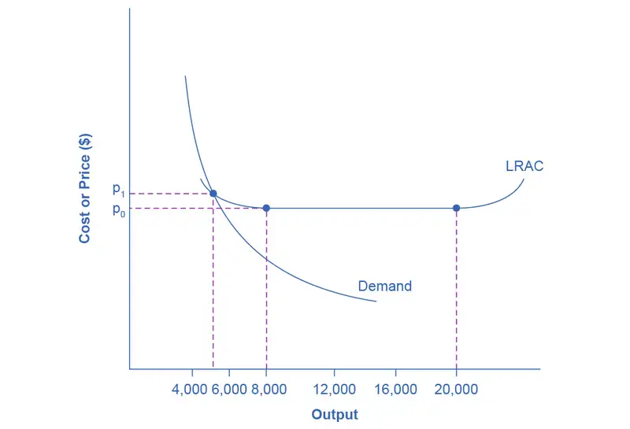
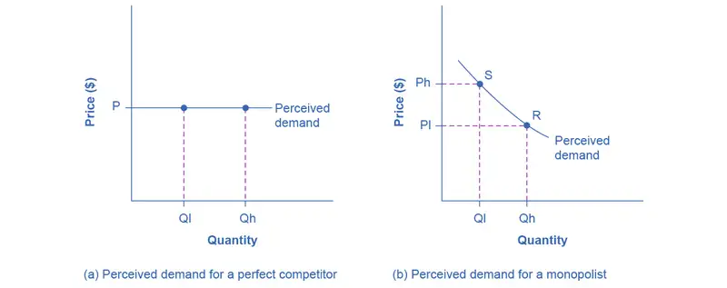
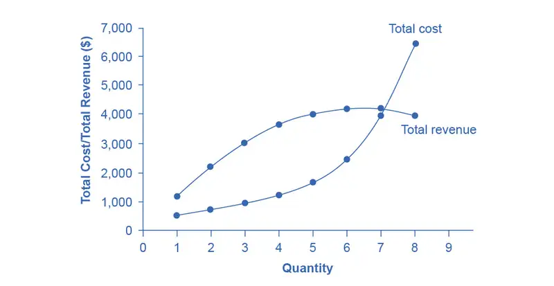
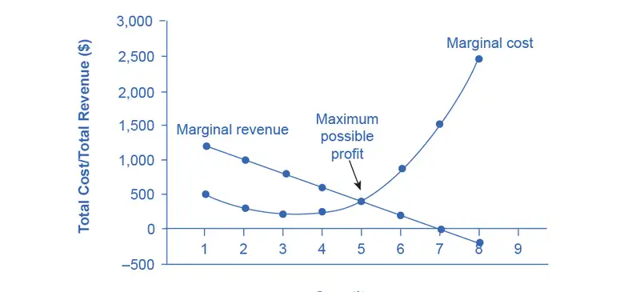
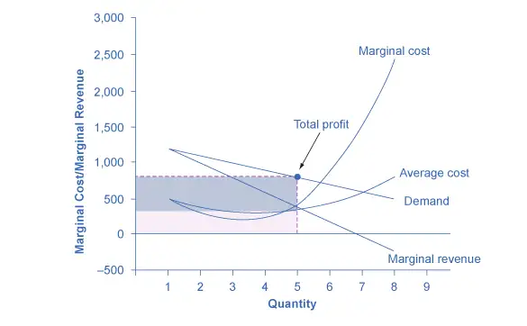
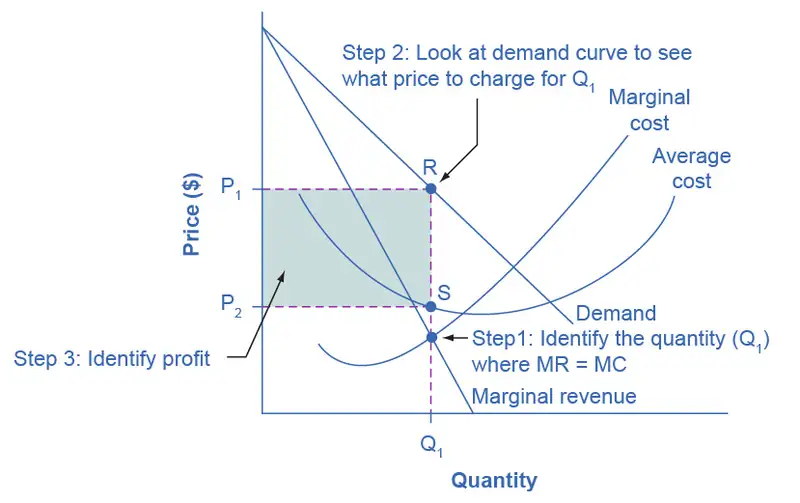
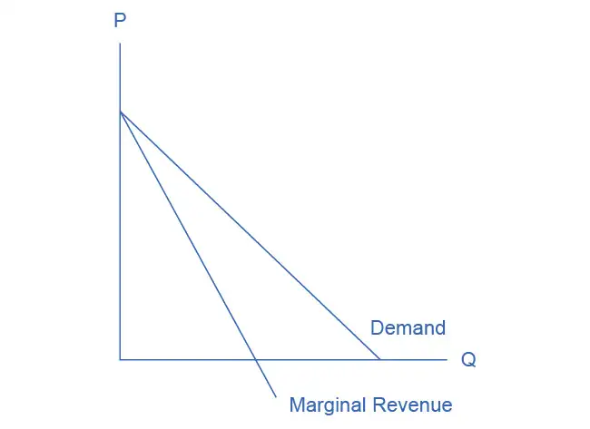

Chapter 9: Monopoly¶
Introduction¶
Bring It Home: The Rest is History
Many of the opening case studies have focused on current events. This one steps into the past to observe how monopoly, or near monopolies, have helped shape history. In spring 1773, the East India Company, a firm that, in its time, was designated “too big to fail,” was experiencing financial difficulties. To help shore up the failing firm, the British Parliament authorized the Tea Act. The act continued the tax on teas and made the East India Company the sole legal supplier of tea to the American colonies. By November, the citizens of Boston had had enough. They refused to permit the unloading of tea, citing their main complaint: “No taxation without representation.” Several newspapers, including The Massachusetts Gazette, warned arriving tea-bearing ships, “We are prepared, and shall not fail to pay them an unwelcome visit by The Mohawks.”
Step forward in time to 1860—the eve of the American Civil War—to another near monopoly supplier of historical significance: the U.S. cotton industry. At that time, the Southern states provided the majority of the cotton Britain imported. The South, wanting to secede from the Union, hoped to leverage Britain’s high dependency on its cotton into formal diplomatic recognition of the Confederate States of America.
This leads us to this chapter's topic: a firm that controls all (or nearly all) of the supply of a good or service—a monopoly. How do monopoly firms behave in the marketplace? Do they have “power?” Does this power potentially have unintended consequences? We’ll return to this case at the end of the chapter to see how the tea and cotton monopolies influenced U.S. history.
Chapter Outline: Introduction to a Monopoly
In this chapter, you will learn about:
- How Monopolies form: Barriers to Entry
- How a Profit-Maximizing Monopoly Chooses Output and Price
Many believe that top executives at firms are the strongest supporters of market competition, but this belief is far from the truth. Think about it this way: If you very much wanted to win an Olympic gold medal, would you rather be far better than everyone else, or locked in competition with many athletes just as good as you? Similarly, if you would like to attain a very high level of profits, would you rather manage a business with little or no competition, or struggle against many tough competitors who are trying to sell to your customers? By now, you might have read the chapter on Perfect Competition. In this chapter, we explore the opposite extreme: monopoly.
If perfect competition is a market where firms have no market power and they simply respond to the market price, monopoly is a market with no competition at all, and firms have a great deal of market power. In the case of monopoly, one firm produces all of the output in a market. Since a monopoly faces no significant competition, it can charge any price it wishes, subject to the demand curve. While a monopoly, by definition, refers to a single firm, in practice people often use the term to describe a market in which one firm merely has a very high market share. This tends to be the definition that the U.S. Department of Justice uses.
Even though there are very few true monopolies in existence, we do deal with some of those few every day, often without realizing it: The U.S. Postal Service, your electric, and garbage collection companies are a few examples. Some new drugs are produced by only one pharmaceutical firm—and no close substitutes for that drug may exist.
From the mid-1990s until 2004, the U.S. Department of Justice prosecuted the Microsoft Corporation for including Internet Explorer as the default web browser with its operating system. The Justice Department’s argument was that, since Microsoft possessed an extremely high market share in the industry for operating systems, the inclusion of a free web browser constituted unfair competition to other browsers, such as Netscape Navigator. Since nearly everyone was using Windows, including Internet Explorer eliminated the incentive for consumers to explore other browsers and made it impossible for competitors to gain a foothold in the market. In 2013, the Windows system ran on more than 90% of the most commonly sold personal computers. In 2015, a U.S. federal court tossed out antitrust charges that Google had an agreement with mobile device makers to set Google as the default search engine.
This chapter begins by describing how monopolies are protected from competition, including laws that prohibit competition, technological advantages, and certain configurations of demand and supply. It then discusses how a monopoly will choose its profit-maximizing quantity to produce and what price to charge. While a monopoly must be concerned about whether consumers will purchase its products or spend their money on something altogether different, the monopolist need not worry about the actions of other competing firms producing its products. As a result, a monopoly is not a price taker like a perfectly competitive firm, but instead exercises some power to choose its market price.
9.1 How Monopolies Form: Barriers to Entry¶
Learning Objectives
By the end of this section, you will be able to:
- Distinguish between a natural monopoly and a legal monopoly.
- Explain how economies of scale and the control of natural resources led to the necessary formation of legal monopolies
- Analyze the importance of trademarks and patents in promoting innovation
- Identify examples of predatory pricing
Because of the lack of competition, monopolies tend to earn significant economic profits. These profits should attract vigorous competition as we described in Perfect Competition, and yet, because of one particular characteristic of monopoly, they do not. Barriers to entry are the legal, technological, or market forces that discourage or prevent potential competitors from entering a market. Barriers to entry can range from the simple and easily surmountable, such as the cost of renting retail space, to the extremely restrictive. For example, there are a finite number of radio frequencies available for broadcasting. Once an entrepreneur or firm has purchased the rights to all of them, no new competitors can enter the market.
In some cases, barriers to entry may lead to monopoly. In other cases, they may limit competition to a few firms. Barriers may block entry even if the firm or firms currently in the market are earning profits. Thus, in markets with significant barriers to entry, it is not necessarily true that abnormally high profits will attract new firms, and that this entry of new firms will eventually cause the price to decline so that surviving firms earn only a normal level of profit in the long run.
There are five types of monopoly, based on the types of barriers to entry they exploit.
Natural Monopoly¶
Economies of scale can combine with the size of the market to limit competition. (We introduced this theme in Production, Cost and Industry Structure). Figure 9.2 presents a long-run average cost curve for the airplane manufacturing industry. It shows economies of scale up to an output of 8,000 planes per year and a price of P0, then constant returns to scale from 8,000 to 20,000 planes per year, and diseconomies of scale at a quantity of production greater than 20,000 planes per year.
Now consider the market demand curve in the diagram, which intersects the long-run average cost (LRAC) curve at an output level of 5,000 planes per year and at a price P1, which is higher than P0. In this situation, the market has room for only one producer. If a second firm attempts to enter the market at a smaller size, say by producing a quantity of 4,000 planes, then its average costs will be higher than those of the existing firm, and it will be unable to compete. If the second firm attempts to enter the market at a larger size, like 8,000 planes per year, then it could produce at a lower average cost—but it could not sell all 8,000 planes that it produced because of insufficient demand in the market.

Economists call this situation, when economies of scale are large relative to the quantity demanded in the market, a natural monopoly. Natural monopolies often arise in industries where the marginal cost of adding an additional customer is very low, once the fixed costs of the overall system are in place. This results in situations where there are substantial economies of scale. For example, once a water company lays the main water pipes through a neighborhood, the marginal cost of providing water service to another home is fairly low. Once the electric company installs lines in a new subdivision, the marginal cost of providing additional electrical service to one more home is minimal. It would be costly and duplicative for a second water company to enter the market and invest in a whole second set of main water pipes, or for a second electricity company to enter the market and invest in a whole new set of electrical wires. These industries offer an example where, because of economies of scale, one producer can serve the entire market more efficiently than a number of smaller producers that would need to make duplicate physical capital investments.
A natural monopoly can also arise in smaller local markets for products that are difficult to transport. For example, cement production exhibits economies of scale, and the quantity of cement demanded in a local area may not be much larger than what a single plant can produce. Moreover, the costs of transporting cement over land are high, and so a cement plant in an area without access to water transportation may be a natural monopoly.
Control of a Physical Resource¶
Another type of monopoly occurs when a company has control of a scarce physical resource. In the U.S. economy, one historical example of this pattern occurred when ALCOA—the Aluminum Company of America—controlled most of the supply of bauxite, a key mineral used in making aluminum. Back in the 1930s, when ALCOA controlled most of the bauxite, other firms were simply unable to produce enough aluminum to compete.
As another example, the majority of global diamond production is controlled by DeBeers, a multi-national company that has mining and production operations in South Africa, Botswana, Namibia, and Canada. It also has exploration activities on four continents, while directing a worldwide distribution network of rough cut diamonds. Although in recent years they have experienced growing competition, their impact on the rough diamond market is still considerable.
Legal Monopoly¶
For some products, the government erects barriers to entry by prohibiting or limiting competition. Under U.S. law, no organization but the U.S. Postal Service is legally allowed to deliver first-class mail. Many states or cities have laws or regulations that allow households a choice of only one electric company, one water company, and one company to pick up the garbage. Most legal monopolies are utilities—products necessary for everyday life—that are socially beneficial. As a consequence, the government allows producers to become regulated monopolies, to ensure that customers have access to an appropriate amount of these products or services. Additionally, legal monopolies are often subject to economies of scale, so it makes sense to allow only one provider.
Promoting Innovation¶
Innovation takes time and resources to achieve. Suppose a company invests in research and development and finds the cure for the common cold. In this world of near ubiquitous information, other companies could take the formula, produce the drug, and because they did not incur the costs of research and development (R&D), undercut the price of the company that discovered the drug. Given this possibility, many firms would choose not to invest in research and development, and as a result, the world would have less innovation. To prevent this from happening, the Constitution of the United States specifies in Article I, Section 8: “The Congress shall have Power . . . to Promote the Progress of Science and Useful Arts, by securing for limited Times to Authors and Inventors the Exclusive Right to their Writings and Discoveries.” Congress used this power to create the U.S. Patent and Trademark Office, as well as the U.S. Copyright Office. A patent gives the inventor the exclusive legal right to make, use, or sell the invention for a limited time. In the United States, exclusive patent rights last for 20 years. The idea is to provide limited monopoly power so that innovative firms can recoup their investment in R&D, but then to allow other firms to produce the product more cheaply once the patent expires.
A trademark is an identifying symbol or name for a particular good, like Chiquita bananas, Chevrolet cars, or the Nike “swoosh” that appears on shoes and athletic gear. Between 2003 and 2019, roughly 6.8 million trademarks were registered with the U.S. government. A firm can renew a trademark repeatedly, as long as it remains in active use.
A copyright, according to the U.S. Copyright Office, “is a form of protection provided by the laws of the United States for ‘original works of authorship’ including literary, dramatic, musical, architectural, cartographic, choreographic, pantomimic, pictorial, graphic, sculptural, and audiovisual creations.” No one can reproduce, display, or perform a copyrighted work without the author's permission. Copyright protection ordinarily lasts for the life of the author plus 70 years.
Roughly speaking, patent law covers inventions and copyright protects books, songs, and art. However, in certain areas, like the invention of new software, it has been unclear whether patent or copyright protection should apply. There is also a body of law known as trade secrets. Even if a company does not have a patent on an invention, competing firms are not allowed to steal their secrets. One famous trade secret is the formula for Coca-Cola, which is not protected under copyright or patent law, but is simply kept secret by the company.
Taken together, we call this combination of patents, trademarks, copyrights, and trade secret law intellectual property, because it implies ownership over an idea, concept, or image, not a physical piece of property like a house or a car. Countries around the world have enacted laws to protect intellectual property, although the time periods and exact provisions of such laws vary across countries. There are ongoing negotiations, both through the World Intellectual Property Organization (WIPO) and through international treaties, to bring greater harmony to the intellectual property laws of different countries to determine the extent to which those in other countries will respect patents and copyrights of those in other countries.
Government limitations on competition used to be more common in the United States. For most of the twentieth century, only one phone company—AT&T—was legally allowed to provide local and long distance service. From the 1930s to the 1970s, one set of federal regulations limited which destinations airlines could choose to fly to and what fares they could charge. Another set of regulations limited the interest rates that banks could pay to depositors; yet another specified how much trucking firms could charge customers.
What products we consider utilities depends, in part, on the available technology. Fifty years ago, telephone companies provided local and long distance service over wires. It did not make much sense to have many companies building multiple wiring systems across towns and the entire country. AT&T lost its monopoly on long distance service when the technology for providing phone service changed from wires to microwave and satellite transmission, so that multiple firms could use the same transmission mechanism. The same thing happened to local service, especially in recent years, with the growth in cellular phone systems.
The combination of improvements in production technologies and a general sense that the markets could provide services adequately led to a wave of deregulation, starting in the late 1970s and continuing into the 1990s. This wave eliminated or reduced government restrictions on the firms that could enter, the prices that they could charge, and the quantities that many industries could produce, including telecommunications, airlines, trucking, banking, and electricity.
Around the world, from Europe to Latin America to Africa and Asia, many governments continue to control and limit competition in what those governments perceive to be key industries, including airlines, banks, steel companies, oil companies, and telephone companies.
Link It Up
Vist this website for examples of some pretty bizarre patents.
Intimidating Potential Competition¶
Businesses have developed a number of schemes for creating barriers to entry by deterring potential competitors from entering the market. One method is known as predatory pricing, in which a firm uses the threat of sharp price cuts to discourage competition. Predatory pricing is a violation of U.S. antitrust law, but it is difficult to prove.
Consider a large airline that provides most of the flights between two particular cities. A new, small start-up airline decides to offer service between these two cities. The large airline immediately slashes prices on this route to the bone, so that the new entrant cannot make any money. After the new entrant has gone out of business, the incumbent firm can raise prices again.
After the company repeats this pattern once or twice, potential new entrants may decide that it is not wise to try to compete. Small airlines often accuse larger airlines of predatory pricing: in the early 2000s, for example, ValuJet accused Delta of predatory pricing, Frontier accused United, and Reno Air accused Northwest. In 2015, the Justice Department ruled against American Express and Mastercard for imposing restrictions on retailers that encouraged customers to use lower swipe fees on credit transactions.
In some cases, large advertising budgets can also act as a way of discouraging the competition. If the only way to launch a successful new national cola drink is to spend more than the promotional budgets of Coca-Cola and Pepsi Cola, not too many companies will try. A firmly established brand name can be difficult to dislodge.
Summing Up Barriers to Entry¶
Table 9.1 lists the barriers to entry that we have discussed. This list is not exhaustive, since firms have proved to be highly creative in inventing business practices that discourage competition. When barriers to entry exist, perfect competition is no longer a reasonable description of how an industry works. When barriers to entry are high enough, monopoly can result.
Table 9.1 Barriers to Entry
| Barrier to Entry | Government Role? | Example |
|---|---|---|
| Natural monopoly | Government often responds with regulation (or ownership) | Water and electric companies |
| Control of a physical resource | No | DeBeers for diamonds |
| Legal monopoly | Yes | Post office, past regulation of airlines and trucking |
| Patent, trademark, and copyright | Yes, through protection of intellectual property | New drugs or software |
| Intimidating potential competitors | Somewhat | Predatory pricing; well-known brand names |
9.2 How a Profit-Maximizing Monopoly Chooses Output and Price¶
Learning Objectives
By the end of this section, you will be able to:
- Explain the perceived demand curve for a perfect competitor and a monopoly
- Analyze a demand curve for a monopoly and determine the output that maximizes profit and revenue
- Calculate marginal revenue and marginal cost
- Explain allocative efficiency as it pertains to the efficiency of a monopoly
Consider a monopoly firm, comfortably surrounded by barriers to entry so that it need not fear competition from other producers. How will this monopoly choose its profit-maximizing quantity of output, and what price will it charge? Profits for the monopolist, like any firm, will be equal to total revenues minus total costs. We can analyze the pattern of costs for the monopoly within the same framework as the costs of a perfectly competitive firm—that is, by using total cost, fixed cost, variable cost, marginal cost, average cost, and average variable cost. However, because a monopoly faces no competition, its situation and its decision process will differ from that of a perfectly competitive firm. (The Clear It Up feature discusses how hard it is sometimes to define “market” in a monopoly situation.)
Demand Curves Perceived by a Perfectly Competitive Firm and by a Monopoly¶
A perfectly competitive firm acts as a price taker, so we calculate total revenue taking the given market price and multiplying it by the quantity of output that the firm chooses. The demand curve as it is perceived by a perfectly competitive firm appears in Figure 9.3 (a). The flat perceived demand curve means that, from the viewpoint of the perfectly competitive firm, it could sell either a relatively low quantity like Ql or a relatively high quantity like Qh at the market price P.

Clear It Up: What defines the market?
A monopoly is a firm that sells all or nearly all of the goods and services in a given market. However, what defines the “market”?
In a famous 1947 case, the federal government accused the DuPont company of having a monopoly in the cellophane market, pointing out that DuPont produced 75% of the cellophane in the United States. DuPont countered that even though it had a 75% market share in cellophane, it had less than a 20% share of the “flexible packaging materials,” which includes all other moisture-proof papers, films, and foils. In 1956, after years of legal appeals, the U.S. Supreme Court held that the broader market definition was more appropriate, and it dismissed the case against DuPont.
Questions over how to define the market continue today. True, Microsoft in the 1990s had a dominant share of the software for computer operating systems, but in the total market for all computer software and services, including everything from games to scientific programs, the Microsoft share was only about 14% in 2014. The Greyhound bus company may have a near-monopoly on the market for intercity bus transportation, but it is only a small share of the market for intercity transportation if that market includes private cars, airplanes, and railroad service. DeBeers has a monopoly in diamonds, but it is a much smaller share of the total market for precious gemstones and an even smaller share of the total market for jewelry. A small town in the country may have only one gas station: is this gas station a “monopoly,” or does it compete with gas stations that might be five, 10, or 50 miles away?
In general, if a firm produces a product without close substitutes, then we can consider the firm a monopoly producer in a single market. However, if buyers have a range of similar—even if not identical—options available from other firms, then the firm is not a monopoly. Still, arguments over whether substitutes are close or not close can be controversial.
While a monopolist can charge any price for its product, nonetheless the demand for the firm’s product constrains the price. No monopolist, even one that is thoroughly protected by high barriers to entry, can require consumers to purchase its product. Because the monopolist is the only firm in the market, its demand curve is the same as the market demand curve, which is, unlike that for a perfectly competitive firm, downward-sloping.
Figure 9.3 illustrates this situation. The monopolist can either choose a point like R with a low price (Pl) and high quantity (Qh), or a point like S with a high price (Ph) and a low quantity (Ql), or some intermediate point. Setting the price too high will result in a low quantity sold, and will not bring in much revenue. Conversely, setting the price too low may result in a high quantity sold, but because of the low price, it will not bring in much revenue either. The challenge for the monopolist is to strike a profit-maximizing balance between the price it charges and the quantity that it sells. However, why isn’t the perfectly competitive firm’s demand curve also the market demand curve? See the following Clear It Up feature for the answer to this question.
Clear It Up: What is the difference between perceived demand and market demand?
The demand curve as perceived by a perfectly competitive firm is not the overall market demand curve for that product. However, the firm’s demand curve as perceived by a monopoly is the same as the market demand curve. The reason for the difference is that each perfectly competitive firm perceives the demand for its products in a market that includes many other firms. In effect, the demand curve perceived by a perfectly competitive firm is a tiny slice of the entire market demand curve. In contrast, a monopoly perceives demand for its product in a market where the monopoly is the only producer.
Total Cost and Total Revenue for a Monopolist¶
We can illustrate profits for a monopolist with a graph of total revenues and total costs, with the example of the hypothetical HealthPill firm in Figure 9.4. The total cost curve has its typical shape that we learned about in Production, Costs and Industry Structure, and that we used in Perfect Competition; that is, total costs rise and the curve grows steeper as output increases, as the final column of Table 9.2 shows.

Table 9.2 Total Costs and Total Revenues of HealthPill
| Quantity Q |
Price P |
Total Revenue TR |
Total Cost TC |
|---|---|---|---|
| 1 | 1,200 | 1,200 | 500 |
| 2 | 1,100 | 2,200 | 750 |
| 3 | 1,000 | 3,000 | 1,000 |
| 4 | 900 | 3,600 | 1,250 |
| 5 | 800 | 4,000 | 1,650 |
| 6 | 700 | 4,200 | 2,500 |
| 7 | 600 | 4,200 | 4,000 |
| 8 | 500 | 4,000 | 6,400 |
Total revenue, though, is different. Since a monopolist faces a downward sloping demand curve, the only way it can sell more output is by reducing its price. Selling more output raises revenue, but lowering price reduces it. Thus, the shape of total revenue isn’t clear. Let’s explore this using the data in Table 9.2, which shows quantities along the demand curve and the price at each quantity demanded, and then calculates total revenue by multiplying price times quantity at each level of output. (In this example, we give the output as 1, 2, 3, 4, and so on, for the sake of simplicity. If you prefer a dash of greater realism, you can imagine that the pharmaceutical company measures these output levels and the corresponding prices per 1,000 or 10,000 pills.) As the figure illustrates, total revenue for a monopolist has the shape of a hill, first rising, next flattening out, and then falling. In this example, total revenue is highest at a quantity of 6 or 7.
However, the monopolist is not seeking to maximize revenue, but instead to earn the highest possible profit. In the HealthPill example in Figure 9.4, the highest profit will occur at the quantity where total revenue is the farthest above total cost. This looks to be somewhere in the middle of the graph, but where exactly? It is easier to see the profit maximizing level of output by using the marginal approach, to which we turn next.
Marginal Revenue and Marginal Cost for a Monopolist¶
In the real world, a monopolist often does not have enough information to analyze its entire total revenues or total costs curves. After all, the firm does not know exactly what would happen if it were to alter production dramatically. However, a monopolist often has fairly reliable information about how changing output by small or moderate amounts will affect its marginal revenues and marginal costs, because it has had experience with such changes over time and because modest changes are easier to extrapolate from current experience. A monopolist can use information on marginal revenue and marginal cost to seek out the profit-maximizing combination of quantity and price.
Table 9.3 expands Table 9.2 using the figures on total costs and total revenues from the HealthPill example to calculate marginal revenue and marginal cost. This monopoly faces typical upward-sloping marginal cost and downward-sloping marginal revenue curves, as Figure 9.5 shows.
Notice that marginal revenue is zero at a quantity of 7, and turns negative at quantities higher than 7. It may seem counterintuitive that marginal revenue could ever be zero or negative: after all, doesn't an increase in quantity sold not always mean more revenue? For a perfect competitor, each additional unit sold brought a positive marginal revenue, because marginal revenue was equal to the given market price. However, a monopolist can sell a larger quantity and see a decline in total revenue. When a monopolist increases sales by one unit, it gains some marginal revenue from selling that extra unit, but also loses some marginal revenue because it must now sell every other unit at a lower price. As the quantity sold becomes higher, at some point the drop in price is proportionally more than the increase in greater quantity of sales, causing a situation where more sales bring in less revenue. In other words, marginal revenue is negative.

Table 9.3 Costs and Revenues of HealthPill
| Quantity Q |
Total Revenue TR |
Marginal Revenue MR |
Total Cost TC |
Marginal Cost MC |
|---|---|---|---|---|
| 1 | 1,200 | 1,200 | 500 | 500 |
| 2 | 2,200 | 1,000 | 775 | 275 |
| 3 | 3,000 | 800 | 1,000 | 225 |
| 4 | 3,600 | 600 | 1,250 | 250 |
| 5 | 4,000 | 400 | 1,650 | 400 |
| 6 | 4,200 | 200 | 2,500 | 850 |
| 7 | 4,200 | 0 | 4,000 | 1,500 |
| 8 | 4,000 | –200 | 6,400 | 2,400 |
A monopolist can determine its profit-maximizing price and quantity by analyzing the marginal revenue and marginal costs of producing an extra unit. If the marginal revenue exceeds the marginal cost, then the firm should produce the extra unit.
For example, at an output of 4 in Figure 9.5, marginal revenue is 600 and marginal cost is 250, so producing this unit will clearly add to overall profits. At an output of 5, marginal revenue is 400 and marginal cost is 400, so producing this unit still means overall profits are unchanged. However, expanding output from 5 to 6 would involve a marginal revenue of 200 and a marginal cost of 850, so that sixth unit would actually reduce profits. Thus, the monopoly can tell from the marginal revenue and marginal cost that of the choices in the table, the profit-maximizing level of output is 5.
The monopoly could seek out the profit-maximizing level of output by increasing quantity by a small amount, calculating marginal revenue and marginal cost, and then either increasing output as long as marginal revenue exceeds marginal cost or reducing output if marginal cost exceeds marginal revenue. This process works without any need to calculate total revenue and total cost. Thus, a profit-maximizing monopoly should follow the rule of producing up to the quantity where marginal revenue is equal to marginal cost—that is, MR = MC. This quantity is easy to identify graphically, where MR and MC intersect.
Work It Out: Maximizing Profits
If you find it counterintuitive that producing where marginal revenue equals marginal cost will maximize profits, working through the numbers will help.
Step 1. Remember, we define marginal cost as the change in total cost from producing a small amount of additional output.
Step 2. Note that in Table 9.3, as output increases from 1 to 2 units, total cost increases from $500 to $775. As a result, the marginal cost of the second unit will be:
Step 3. Remember that, similarly, marginal revenue is the change in total revenue from selling a small amount of additional output.
Step 4. Note that in Table 9.3, as output increases from 1 to 2 units, total revenue increases from $1200 to $2200. As a result, the marginal revenue of the second unit will be:
Table 9.4 Marginal Revenue, Marginal Cost, Marginal and Total Profit
| Quantity Q |
Marginal Revenue MR |
Marginal Cost MC |
Marginal Profit MP |
Total Profit P |
|---|---|---|---|---|
| 1 | 1,200 | 500 | 700 | 700 |
| 2 | 1,000 | 275 | 725 | 1,425 |
| 3 | 800 | 225 | 575 | 2,000 |
| 4 | 600 | 250 | 350 | 2,350 |
| 5 | 400 | 400 | 0 | 2,350 |
| 6 | 200 | 850 | −650 | 1,700 |
| 7 | 0 | 1,500 | −1,500 | 200 |
| 8 | −200 | 2,400 | −2,600 | −2,400 |
Table 9.4 repeats the marginal cost and marginal revenue data from Table 9.3, and adds two more columns: Marginal profit is the profitability of each additional unit sold. We define it as marginal revenue minus marginal cost. Finally, total profit is the sum of marginal profits. As long as marginal profit is positive, producing more output will increase total profits. When marginal profit turns negative, producing more output will decrease total profits. Total profit is maximized where marginal revenue equals marginal cost. In this example, maximum profit occurs at 5 units of output.
A perfectly competitive firm will also find its profit-maximizing level of output where MR = MC. The key difference with a perfectly competitive firm is that in the case of perfect competition, marginal revenue is equal to price (MR = P), while for a monopolist, marginal revenue is not equal to the price, because changes in quantity of output affect the price.
Illustrating Monopoly Profits¶
It is straightforward to calculate profits of given numbers for total revenue and total cost. However, the size of monopoly profits can also be illustrated graphically with Figure 9.6, which takes the marginal cost and marginal revenue curves from the previous exhibit and adds an average cost curve and the monopolist’s perceived demand curve. Table 9.5 shows the data for these curves.
Table 9.5
| Quantity Q |
Demand P |
Marginal Revenue MR |
Marginal Cost MC |
Average Cost AC |
|---|---|---|---|---|
| 1 | 1,200 | 1,200 | 500 | 500 |
| 2 | 1,100 | 1,000 | 275 | 388 |
| 3 | 1,000 | 800 | 225 | 333 |
| 4 | 900 | 600 | 250 | 313 |
| 5 | 800 | 400 | 400 | 330 |
| 6 | 700 | 200 | 850 | 417 |
| 7 | 600 | 0 | 1,500 | 571 |
| 8 | 500 | –200 | 2,400 | 800 |

Figure 9.7 illustrates the three-step process where a monopolist: selects the profit-maximizing quantity to produce; decides what price to charge; determines total revenue, total cost, and profit.
Step 1: The Monopolist Determines Its Profit-Maximizing Level of Output
The firm can use the points on the demand curve D to calculate total revenue, and then, based on total revenue, calculate its marginal revenue curve. The profit-maximizing quantity will occur where MR = MC—or at the last possible point before marginal costs start exceeding marginal revenue. On Figure 9.6, MR = MC occurs at an output of 5.
Step 2: The Monopolist Decides What Price to Charge
The monopolist will charge what the market is willing to pay. A dotted line drawn straight up from the profit-maximizing quantity to the demand curve shows the profit-maximizing price which, in Figure 9.6, is $800. This price is above the average cost curve, which shows that the firm is earning profits.
Step 3: Calculate Total Revenue, Total Cost, and Profit
Total revenue is the overall shaded box, where the width of the box is the quantity sold and the height is the price. In Figure 9.6, this is 5 x $800 = $4000. In Figure 9.6, the bottom part of the shaded box, which is shaded more lightly, shows total costs; that is, quantity on the horizontal axis multiplied by average cost on the vertical axis or 5 x $330 = $1650. The larger box of total revenues minus the smaller box of total costs will equal profits, which the darkly shaded box shows. Using the numbers gives $4000 - $1650 = $2350. In a perfectly competitive market, the forces of entry would erode this profit in the long run. However, a monopolist is protected by barriers to entry. In fact, one obvious sign of a possible monopoly is when a firm earns profits year after year, while doing more or less the same thing, without ever seeing increased competition eroding those profits.

Clear It Up: Why is a monopolist’s marginal revenue always less than the price?
The marginal revenue curve for a monopolist always lies beneath the market demand curve. To understand why, think about increasing the quantity along the demand curve by one unit, so that you take one step down the demand curve to a slightly higher quantity but a slightly lower price. A demand curve is not sequential: It is not that first we sell Q1 at a higher price, and then we sell Q2 at a lower price. Rather, a demand curve is conditional: If we charge the higher price, we would sell Q1. If, instead, we charge a lower price (on all the units that we sell), we would sell Q2.
When we think about increasing the quantity sold by one unit, marginal revenue is affected in two ways. First, we sell one additional unit at the new market price. Second, all the previous units, which we sold at the higher price, now sell for less. Because of the lower price on all units sold, the marginal revenue of selling a unit is less than the price of that unit—and the marginal revenue curve is below the demand curve. Tip: For a straight-line demand curve, MR and demand have the same vertical intercept. As output increases, marginal revenue decreases twice as fast as demand, so that the horizontal intercept of MR is halfway to the horizontal intercept of demand. You can see this in the Figure 9.8.

The Inefficiency of Monopoly¶
Most people criticize monopolies because they charge too high a price, but what economists object to is that monopolies do not supply enough output to be allocatively efficient. To understand why a monopoly is inefficient, it is useful to compare it with the benchmark model of perfect competition.
Allocative efficiency is an economic concept regarding efficiency at the social or societal level. It refers to producing the optimal quantity of some output, the quantity where the marginal benefit to society of one more unit just equals the marginal cost. The rule of profit maximization in a world of perfect competition was for each firm to produce the quantity of output where P = MC, where the price (P) is a measure of how much buyers value the good and the marginal cost (MC) is a measure of what marginal units cost society to produce. Following this rule assures allocative efficiency. If P > MC, then the marginal benefit to society (as measured by P) is greater than the marginal cost to society of producing additional units, and a greater quantity should be produced. However, in the case of monopoly, price is always greater than marginal cost at the profit-maximizing level of output, as you can see by looking back at Figure 9.6. Thus, consumers do not benefit from a monopoly because it will sell a lower quantity in the market, at a higher price, than would have been the case in a perfectly competitive market.
The problem of inefficiency for monopolies often runs even deeper than these issues, and also involves incentives for efficiency over longer periods of time. There are counterbalancing incentives here. On one side, firms may strive for new inventions and new intellectual property because they want to become monopolies and earn high profits—at least for a few years until the competition catches up. In this way, monopolies may come to exist because of competitive pressures on firms. However, once a barrier to entry is in place, a monopoly that does not need to fear competition can just produce the same old products in the same old way—while still ringing up a healthy rate of profit. John Hicks, who won the Nobel Prize for economics in 1972, wrote in 1935: “The best of all monopoly profits is a quiet life.” He did not mean the comment in a complimentary way. He meant that monopolies may bank their profits and slack off on trying to please their customers.
When AT&T provided all of the local and long-distance phone service in the United States, along with manufacturing most of the phone equipment, the payment plans and types of phones did not change much. The old joke was that you could have any color phone you wanted, as long as it was black. However, in 1982, government litigation split up AT&T into a number of local phone companies, a long-distance phone company, and a phone equipment manufacturer. An explosion of innovation followed. Services like call waiting, caller ID, three-way calling, voice mail through the phone company, mobile phones, and wireless connections to the internet all became available. Companies offered a wide range of payment plans, as well. It was no longer true that all phones were black. Instead, phones came in a wide variety of shapes and colors. The end of the telephone monopoly brought lower prices, a greater quantity of services, and also a wave of innovation aimed at attracting and pleasing customers.
Bring It Home: The Rest is History
In the opening case, we presented the East India Company and the Confederate States as a monopoly or near monopoly provider of a good. Nearly every American schoolchild knows the result of the “unwelcome visit” the “Mohawks” bestowed upon Boston Harbor’s tea-bearing ships—the Boston Tea Party. Regarding the cotton industry, we also know Great Britain remained neutral during the Civil War, taking neither side during the conflict.
Did the monopoly nature of these business have unintended and historical consequences? Might the American Revolution have been deterred, if the East India Company had sailed the tea-bearing ships back to England? Might the southern states have made different decisions had they not been so confident “King Cotton” would force diplomatic recognition of the Confederate States of America? Of course, it is not possible to definitively answer these questions. We cannot roll back the clock and try a different scenario. We can, however, consider the monopoly nature of these businesses and the roles they played and hypothesize about what might have occurred under different circumstances.
Perhaps if there had been legal free tea trade, the colonists would have seen things differently. There was smuggled Dutch tea in the colonial market. If the colonists had been able to freely purchase Dutch tea, they would have paid lower prices and avoided the tax.
What about the cotton monopoly? With one in five jobs in Great Britain depending on Southern cotton and the Confederate States as nearly the sole provider of that cotton, why did Great Britain remain neutral during the Civil War? At the beginning of the war, Britain simply drew down massive stores of cotton. These stockpiles lasted until near the end of 1862. Why did Britain not recognize the Confederacy at that point? Two reasons: The Emancipation Proclamation and new sources of cotton. Having outlawed slavery throughout the United Kingdom in 1833, it was politically impossible for Great Britain, empty cotton warehouses or not, to recognize, diplomatically, the Confederate States. In addition, during the two years it took to draw down the stockpiles, Britain expanded cotton imports from India, Egypt, and Brazil.
Monopoly sellers often see no threats to their superior marketplace position. In these examples did the power of the monopoly hide other possibilities from the decision makers? Perhaps. As a result of their actions, this is how history unfolded.
Chapter Review¶
Key Terms¶
- barriers to entry
- the legal, technological, or market forces that may discourage or prevent potential competitors from entering a market
- copyright
- a form of legal protection to prevent copying, for commercial purposes, original works of authorship, including books and music
- deregulation
- removing government controls over setting prices and quantities in certain industries
- intellectual property
- the body of law including patents, trademarks, copyrights, and trade secret law that protect the right of inventors to produce and sell their inventions
- legal monopoly
- legal prohibitions against competition, such as regulated monopolies and intellectual property protection
- marginal profit
- profit of one more unit of output, computed as marginal revenue minus marginal cost
- monopoly
- a situation in which one firm produces all of the output in a market
- natural monopoly
- economic conditions in the industry, for example, economies of scale or control of a critical resource, that limit effective competition
- patent
- a government rule that gives the inventor the exclusive legal right to make, use, or sell the invention for a limited time
- predatory pricing
- when an existing firm uses sharp but temporary price cuts to discourage new competition
- trade secrets
- methods of production kept secret by the producing firm
- trademark
- an identifying symbol or name for a particular good and can only be used by the firm that registered that trademark
Key Concepts and Summary¶
9.1 How Monopolies Form: Barriers to Entry¶
Barriers to entry prevent or discourage competitors from entering the market. These barriers include: economies of scale that lead to natural monopoly; control of a physical resource; legal restrictions on competition; patent, trademark and copyright protection; and practices to intimidate the competition like predatory pricing. Intellectual property refers to legally guaranteed ownership of an idea, rather than a physical item. The laws that protect intellectual property include patents, copyrights, trademarks, and trade secrets. A natural monopoly arises when economies of scale persist over a large enough range of output that if one firm supplies the entire market, no other firm can enter without facing a cost disadvantage.
9.2 How a Profit-Maximizing Monopoly Chooses Output and Price¶
A monopolist is not a price taker, because when it decides what quantity to produce, it also determines the market price. For a monopolist, total revenue is relatively low at low quantities of output, because it is not selling much. Total revenue is also relatively low at very high quantities of output, because a very high quantity will sell only at a low price. Thus, total revenue for a monopolist will start low, rise, and then decline. The marginal revenue for a monopolist from selling additional units will decline. Each additional unit a monopolist sells will push down the overall market price, and as it sells more units, this lower price applies to increasingly more units.
The monopolist will select the profit-maximizing level of output where MR = MC, and then charge the price for that quantity of output as determined by the market demand curve. If that price is above average cost, the monopolist earns positive profits.
Monopolists are not productively efficient, because they do not produce at the minimum of the average cost curve. Monopolists are not allocatively efficient, because they do not produce at the quantity where P = MC. As a result, monopolists produce less, at a higher average cost, and charge a higher price than would a combination of firms in a perfectly competitive industry. Monopolists also may lack incentives for innovation, because they need not fear entry.
Self-Check Questions¶
9.1 How Monopolies Form: Barriers to Entry¶
1. Classify the following as a government-enforced barrier to entry, a barrier to entry that is not government-enforced, or a situation that does not involve a barrier to entry.
- A patented invention
- A popular but easily copied restaurant recipe
- An industry where economies of scale are very small compared to the size of demand in the market
- A well-established reputation for slashing prices in response to new entry
- A well-respected brand name that has been carefully built up over many years
Answer
- A patent is a government-enforced barrier to entry.
- This is not a barrier to entry.
- This is not a barrier to entry.
- This is a barrier to entry, but it is not government-enforced.
- This is a barrier to entry, but it is not directly government enforced.
2. Classify the following as a government-enforced barrier to entry, a barrier to entry that is not government-enforced, or a situation that does not involve a barrier to entry.
- A city passes a law on how many licenses it will issue for taxicabs
- A city passes a law that all taxicab drivers must pass a driving safety test and have insurance
- A well-known trademark
- Owning a spring that offers very pure water
- An industry where economies of scale are very large compared to the size of demand in the market
Answer
- This is a government-enforced barrier to entry.
- This is an example of a government law, but perhaps it is not much of a barrier to entry if most people can pass the safety test and get insurance.
- Trademarks are enforced by government, and therefore are a barrier to entry.
- This is probably not a barrier to entry, since there are a number of different ways of getting pure water.
- This is a barrier to entry, but it is not government-enforced.
3. Suppose the local electrical utility, a legal monopoly based on economies of scale, was split into four firms of equal size, with the idea that eliminating the monopoly would promote competitive pricing of electricity. What do you anticipate would happen to prices?
Answer
Because of economies of scale, each firm would produce at a higher average cost than before. (They would each have to build their own power lines.) As a result, they would each have to raise prices to cover their higher costs. The policy would fail.
4. If Congress reduced the period of patent protection from 20 years to 10 years, what would likely happen to the amount of private research and development?
Answer
Shorter patent protection would make innovation less lucrative, so the amount of research and development would likely decline.
9.2 How a Profit-Maximizing Monopoly Chooses Output and Price¶
5. Suppose demand for a monopoly’s product falls so that its profit-maximizing price is below average variable cost. How much output should the firm supply? Hint: Draw the graph.
Answer
If price falls below AVC, the firm will not be able to earn enough revenues even to cover its variable costs. In such a case, it will suffer a smaller loss if it shuts down and produces no output. By contrast, if it stayed in operation and produced the level of output where MR = MC, it would lose all of its fixed costs plus some variable costs. If it shuts down, it only loses its fixed costs.
6. Imagine a monopolist could charge a different price to every customer based on how much the customer is willing to pay. How would this affect monopoly profits?
Answer
This scenario is called “perfect price discrimination.” The result would be that the monopolist would produce more output, the same amount in fact as would be produced by a perfectly competitive industry. However, there would be no consumer surplus since each buyer is paying exactly what they think the product is worth. Therefore, the monopolist would be earning the maximum possible profits.
Review Questions¶
9.1 How Monopolies Form: Barriers to Entry¶
7. How is monopoly different from perfect competition?
8. What is a barrier to entry? Give some examples.
9. What is a natural monopoly?
10. What is a legal monopoly?
11. What is predatory pricing?
12. How is intellectual property different from other property?
13. What legal mechanisms protect intellectual property?
14. In what sense is a natural monopoly “natural”?
9.2 How a Profit-Maximizing Monopoly Chooses Output and Price¶
15. How is the demand curve perceived by a perfectly competitive firm different from the demand curve perceived by a monopolist?
16. How does the demand curve perceived by a monopolist compare with the market demand curve?
17. Is a monopolist a price taker? Explain briefly.
18. What is the usual shape of a total revenue curve for a monopolist? Why?
19. What is the usual shape of a marginal revenue curve for a monopolist? Why?
20. How can a monopolist identify the profit-maximizing level of output if it knows its total revenue and total cost curves?
21. How can a monopolist identify the profit-maximizing level of output if it knows its marginal revenue and marginal costs?
22. When a monopolist identifies its profit-maximizing quantity of output, how does it decide what price to charge?
23. Is a monopolist allocatively efficient? Why or why not?
24. How does the quantity produced and price charged by a monopolist compare to that of a perfectly competitive firm?
Critical Thinking Questions¶
9.1 How Monopolies Form: Barriers to Entry¶
25. ALCOA does not have the monopoly power it once had. How do you suppose their barriers to entry were weakened?
26. Why are generic pharmaceuticals significantly cheaper than name brand ones?
27. For many years, the Justice Department has tried to break up large firms like IBM, Microsoft, and most recently Google, on the grounds that their large market share made them essentially monopolies. In a global market, where U.S. firms compete with firms from other countries, would this policy make the same sense as it might in a purely domestic context?
28. Intellectual property laws are intended to promote innovation, but some economists, such as Michele Boldrin and David K. Levine, have argued that such laws are not desirable. In the United States, there is no intellectual property protection for food recipes or for fashion designs. Considering the state of these two industries, and bearing in mind the discussion of the inefficiency of monopolies, can you think of any reasons why intellectual property laws might hinder innovation in some cases?
9.2 How a Profit-Maximizing Monopoly Chooses Output and Price¶
29. Imagine that you are managing a small firm and thinking about entering the market of a monopolist. The monopolist is currently charging a high price, and you have calculated that you can make a nice profit charging 10% less than the monopolist. Before you go ahead and challenge the monopolist, what possibility should you consider for how the monopolist might react?
30. If a monopoly firm is earning profits, how much would you expect these profits to be diminished by entry in the long run?
Problems¶
9.1 How Monopolies Form: Barriers to Entry¶
31. Return to Figure 9.2. Suppose P0 is $10 and P1 is $11. Suppose a new firm with the same LRAC curve as the incumbent tries to break into the market by selling 4,000 units of output. Estimate from the graph what the new firm’s average cost of producing output would be. If the incumbent continues to produce 6,000 units, how much output would the two firms supply to the market? Estimate what would happen to the market price as a result of the supply of both the incumbent firm and the new entrant. Approximately how much profit would each firm earn?
9.2 How a Profit-Maximizing Monopoly Chooses Output and Price¶
32. Draw the demand curve, marginal revenue, and marginal cost curves from Figure 9.6, and identify the quantity of output the monopoly wishes to supply and the price it will charge. Suppose demand for the monopoly’s product increases dramatically. Draw the new demand curve. What happens to the marginal revenue as a result of the increase in demand? What happens to the marginal cost curve? Identify the new profit-maximizing quantity and price. Does the answer make sense to you?
33. Draw a monopolist’s demand curve, marginal revenue, and marginal cost curves. Identify the monopolist’s profit-maximizing output level. Now, think about a slightly higher level of output (say Q0 + 1). According to the graph, is there any consumer willing to pay more than the marginal cost of that new level of output? If so, what does this mean?
References¶
References
Aboukhadijeh, Feross. “Chapter 20: Girding for War - The North and the South, 1861-1865.” StudyNotes, Inc. Accessed July 7, 2013. http://www.apstudynotes.org/us-history/outlines/chapter-20-girding-for-war-the-north-and-the-south-1861-1865/.
British Parliament. “(28 August 1833). Slavery Abolition Act 1833; Section LXIV.” Accessed July 2013. http://www.pdavis.nl/Legis_07.htm.
Dattel, E. (nd). "Cotton and the Civil War." Mississippi Historical Society. Accessed July 2013. http://mshistorynow.mdah.state.ms.us/articles/291/cotton-and-the-civil-war.
Gartner. 2015. “Gartner Says Tablet Sales Continue to Be Slow in 2015.” Accessed March 12, 2015. http://www.gartner.com/newsroom/id/2954317.
Grogan, David. 2015. “Federal Judge Finds AmEx’s Anti-Steering Rule Violates Antitrust Law.” American Booksellers Association. Accessed March 12, 2015. http://www.bookweb.org/news/federal-judge-finds-amex%E2%80%99s-anti-steering-rule-violates-antitrust-law.
Massachusetts Historical Society. “The Coming of the American Revolution 1764-1776: The Boston Tea Party.” Retrieved from http://www.masshist.org/revolution/teaparty.php.
Massachusetts Historical Society. “Whereas our Nation.” The Massachusetts Gazette, p. 2. Accessed July 2013 http://www.masshist.org/revolution/image-viewer.php?old=1&item_id=457&img_step=1&nmask=1&mode=large.
Pelegrin, William. 2015. “Judge Overrules Antitrust Case Against Google , Says Setting Default Search Engines Is Fair.” Digital Trends. Accessed March 12, 2015. http://www.digitaltrends.com/mobile/judge-tosses-out-google-antitrust-lawsuit/.
Adapted from Principles of Economics 3e by OpenStax, licensed under CC BY 4.0. Access the original for free at openstax.org. Changes: converted to the web reading format of The Open Book Project.